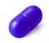

이 기능성이 인정된 성분 2종
성분 사전에 있는 성분 가운데 식약처 인정 기능성 내용에 이 문구가 들어간 성분입니다. 성분을 누르면 효능·권장량·궁합·먹는 시간을 봅니다.

식약처 개별인정 원료 21종
식품안전나라 기능성 원료 인정현황에서 이 기능성이 인정된 원료입니다. 인정 업체가 많은 순으로 정렬했습니다.
| 원료명 | 구분 | 인정번호 | 인정일 | 인정 기능성 내용 |
|---|---|---|---|---|
| KANEKA Q10 | 개별인정형 | 2008-44 | 2008-08-26 | 코엔자임 Q10은 혈압이 높은 사람에게 도움을 줄 수 있습니다. (기타기능II) |
| L-글루타민산 유래 GABA 함유 분말 | 개별인정형 | 2009-1 | 2009-01-28 | 혈압이 높은 사람에게 도움을 줄 수 있습니다(기타기능II) |
| 가쯔오부시 올리고 펩타이드 | 개별인정형 | 2006-16 | 2006-08-17 | 혈압이 걱정되시는 분에게 도움을 줄 수 있습니다. (기타기능II) |
| 나토균배양분말 | 개별인정형 | 2012-7 | 2012-02-09 | 혈압이 높은 사람에게 도움을 줄 수 있음, 혈소판 응집억제를 통한 혈행개선에 도움을 줄 수 있음 |
| 동우코엔자임Q10 | 개별인정형 | 2008-45 | 2008-09-08 | 코엔자임 Q10은 혈압이 높은 사람에게도움을 줄 수 있습니다. (기타기능II) |
| 미쯔비시 코엔자임Q10 | 개별인정형 | 2008-43 | 2008-08-26 | 코엔자임 Q10은 혈압이 높은 사람에게 도움을 줄 수 있습니다. (기타기능II) |
| 블랙라즈베리 추출물 | 개별인정형 | 2022-10 | 2022-02-08 | 혈압 조절에 도움을 줄 수 있음 |
| 블랙라즈베리 추출물 | 개별인정형 | 2022-9 | 2022-02-08 | 혈압개선에 도움 |
| 서목태(쥐눈이콩)펩타이드 | 개별인정형 | 2010-53 | 2010-11-23 | 혈당 조절에 도움을 줄 수 있음(생리활성기능 2등급), 혈압이 높은 사람에게 도움을 줄 수 있음(생리활성기능 2등급), 체지방 감소에 도움을 줄 수 있음(생리활성기능 2등급) |
| 연어펩타이드 | 개별인정형 | 2010-2 | 2010-02-02 | 혈압이 높은 사람에게 도움을 줄 수 있음(기타기능II) |
| 오가피열매추출물 | 개별인정형 | 2019-11 | 2019-07-05 | 혈압조절에 도움을 줄 수 있음 |
| 올리브잎주정추출물 | 개별인정형 | 2014-9 | 2014-02-25 | 혈압 조절에 도움을 줄 수 있음 |
| 올리브잎주정추출물 EFLA943 | 개별인정형 | 2006-25 | 2010-04-23 | 혈압조절에 도움을 줄 수 있음 |
| 카제인가수분해물 | 개별인정형 | 2010-6 | 2010-02-05 | 혈압이 높은 사람에게 도움을 줄 수 있습니다.(기타기능 II) |
| 카제인가수분해물 | 개별인정형 | 2006-19 | 2006-08-17 | 혈압이 걱정되시는 분에게 도움을 줄 수 있음(기타기능II) |
| 포도씨 추출물 | 개별인정형 | 2013-9 | 2013-05-27 | 혈압이 높은 사람에게 도움을 줄 수 있음(생리활성기능 2등급) |
| 해태올리고펩타이드 | 개별인정형 | 2009-87 | 2009-12-07 | 혈압조절에 도움을 줄 수 있음(기타기능II) |
| 홍삼추출효소처리분말 | 개별인정형 | 2024-33 | 2024-11-20 | 혈압조절에 도움을 줄 수 있음 |
| 가쯔오부시올리고펩타이드 | 개별인정형 | 제2006-13호 | 혈압이 걱정되시는 분에게 도움을 줄 수 있음(기타기능II) | |
| 정어리펩타이드 SP100N | 개별인정형 | 제2004-1호 | 혈압을 조절하는데 도움을 줄 수 있음 | |
| 카제인가수분해물 | 개별인정형 | 제2009-22호 | 혈압이 높은 사람에게 도움을 줄 수 있습니다(기타기능II) |
이 기능성을 표시한 신고 제품
식약처 품목제조신고 가운데 이 기능성을 표시한 제품 434건(2021-04 이후 수집분) 중 알려진 브랜드·최근 신고 순으로 12건을 보여줍니다. 성분별 전체 목록은 제품 찾기에서 보세요.
먹는 시간
| 성분 | 권장 시간 | 메모 |
|---|---|---|
| 마늘 (흑마늘) | 식후 | 공복에는 속쓰림·냄새가 심할 수 있어 식후에 |
| 코엔자임 Q10 | 식후 (지방 포함 식사) | 지용성. 일부는 저녁 섭취 시 잠이 잘 안 온다고 보고해 아침·점심 권장 |
전체 성분은 영양제 복용 시간표에서 보세요.
관련 가이드
어떤 성분을 어떻게 조합할지는 가이드에서 설명합니다.
고민별혈압 영양제는 인정 원료가 몇 개 없고, 염분·체중·운동이 먼저입니다'혈압 낮추는 영양제'로 광고되는 제품은 많지만 식약처가 혈압과 관련해 인정한 문구는 '높은 혈압 감소에 도움을 줄 수 있음'(코엔자임Q10, 하루 90~100m…대상별혈압약을 먹고 있다면 영양제는 이렇게 고르세요혈압약을 먹는 분의 영양제 원칙은 '혈압을 더 내리거나 올리는 성분을 알고, 약과 겹칠 때는 수치를 재는 것'입니다. 코엔자임Q10·마늘·오메가3·마그네슘은 혈압…고민별콜레스테롤이 걱정될 때, 영양제로 할 수 있는 것과 없는 것건강검진에서 LDL 콜레스테롤이 '주의' 범위로 나오면 가장 먼저 찾는 것이 영양제입니다. 식약처가 '혈중 콜레스테롤 개선에 도움을 줄 수 있음'으로 인정한 원료…대상별50대 이상 영양제, 약과의 궁합까지 보는 법50대부터는 '무엇을 더 먹을까'보다 '먹는 약과 괜찮은가'가 먼저입니다. 흡수가 떨어지는 비타민B12·비타민D, 골손실을 막는 칼슘·K2가 기본이고, 관절·눈·…고민별혈행 영양제, 조합할수록 출혈 주의가 필요한 이유손발이 차고 저리거나 중성지방 수치가 높을 때 찾는 것이 혈행 영양제입니다. 오메가3·은행잎·홍삼은 모두 식약처 인정 기능성에 '혈행 개선'이 있지만, 혈소판 응…고민별잇몸은 비타민C·프로폴리스, 발치·임플란트 전엔 출혈 성분 중단, 츄어블은 치아를 녹입니다구강 건강에서 영양제의 역할은 세 가지로 나뉩니다. 잇몸 염증이 잦다면 결합조직을 만드는 비타민C 와 식약처가 '구강에서의 항균작용'을 인정한 프로폴리스가 보조가…
자주 묻는 질문
'높은 혈압 감소에 도움을 줄 수 있음'은 어떤 의미인가요?
식품의약품안전처가 과학적 근거를 심사해 인정한 기능성 문구로, 인정된 원료를 정해진 양 이상 넣은 건강기능식품에만 표시할 수 있습니다. 질병의 예방이나 치료 효과를 뜻하지 않으며, 개인차가 있습니다.
혈압 관리 영양제는 어떻게 고르나요?
제품 라벨의 '기능성 내용'에 이 문구가 있는지, 원료명과 1일 섭취량이 인정 기준에 맞는지 확인하세요. 같은 기능성이라도 원료마다 작용 방식과 주의사항이 다르므로 성분 사전의 권장 섭취량·주의사항을 함께 보세요.
약을 먹고 있는데 함께 먹어도 되나요?
일부 성분은 약의 흡수나 작용에 영향을 줄 수 있습니다. 성분 사전의 '약과 함께 먹을 때' 항목과 약과 영양제 가이드를 확인하고, 새로 시작하기 전에 의사·약사와 상의하세요.
함께 보면 좋은 페이지
- 기능성별 영양제 전체 목록
- 나에게 맞는 영양제 찾기 — 고민과 상황으로 성분 추천
- 영양제 궁합표 · 영양제 복용 시간표
- 약과 영양제 가이드